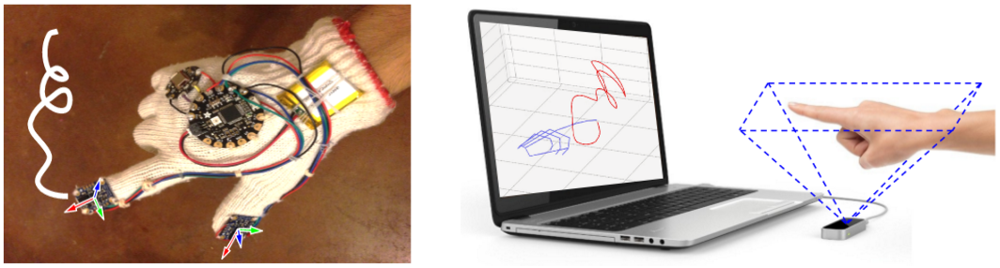

Welcome to FMKit
FMKit (i.e., Finger Motion analysis software Kit) is a code library and data repository for finger motion based in-air-handwriting analysis. Besides, we have also built a demo system for FMKit. See the video and demo.

The FMKit Code Library
The FMKit library contains a set of Python code and scripts to model and process in-air-handwriting signals. See the "FMKit GitHub repository". An overview is shown as follows.
- code_fmkit ---> The main library code written in Python.
- The "fmsignal.py" module contains the classes modeling the finger motion signal.
- The "fmsignal_vis.py" module contains functions to plot and animate the signal and the trajectory.
- The "fmsignal_demo.py" module contains demo code for the user manual on signal manipulation.
- The "pyrotation" module is copied from the pyrotation project, which is necessary for finger motion signal preprocessing.
- code_utilities ---> Utility code written in C to speed up the Dynamic Time Warping calculation.
- data_demo ---> Some example in-air-handwriting signals, collected using two devices.
- meta_demo ---> Metadata of the datasets.
The FMKit code library requires the following software packages
- Python 3 (tested with Python 3.6.9)
- NumPy (tested with NumPy 1.19.5)
- Matplotlib (tested with 3.1.2)
To use this code library, just download the Python modules under the "code_fmkit" folder and incorporate into your project.
The FMKit Data Repository
The FMKit data repository contains multiple datasets, all collected using two types of devices (shown in the following figure): a wearable device (a custom-made data glove with inertial sensors) and a contactless 3D camera (the Leap Motion controller). The glove has a few variants with slightly different form factors (e.g., glove or hand band) and microcontrollers, but the essential motion sensors and the obtained signals are identical.

Currently, the following datasets are available. See the "The FMKit Data Repository" section in "The FMKit Architecture" document for further details.
(1) ID-passcode: This dataset contains in-air-handwriting signals of ID strings and passcodes by users for login through a gesture interface.
(2) ID-passcode-collision: This dataset contains in-air-handwriting signals of ID strings and passcodes by imposters (knowing the contents but without seeing the original users' hand movements). The contents of ID strings and passcodes are the same as the dataset "ID-passcode".
(3) ID-passcode-spoofing: This dataset contains in-air-handwriting signals of ID strings and passcodes by imposters (knowing the contents and seeing the original users' hand movements). The contents of ID strings and passcodes are the same as the dataset "ID-passcode".
(4) ID-passcode-persistence: This dataset contains in-air-handwriting signals of ID strings and passcodes by users for multiple sessions in different days. The contents of ID strings and passcodes are the same as the dataset "ID-passcode".
(5) word-210: This dataset contains in-air-handwriting signals of 210 English words and 210 Chinese words.
(6) FMCode-survey: This dataset contains the survey results on the subjective evaluation of the usability of a gesture sign-in system (i.e., FMCode).
This dataset construction effort has IRB approval from the authors' institute (Arizona State University STUDY00008279 and STUDY00010539). Currently, the "word-210" dataset is openly available here. If you would like to use other datasets related to in-air-handwriting of ID and passcode, please send an email application to our academic advisor Dr. Dijiang Huang (see the "Authors" section below).
Authors
- Duo Lu < duolu AT asu DOT edu > - main contributor, current maintainer of the project.
- Yuli Deng < ydeng19 AT asu DOT edu > - contributor.
- Linzhen Luo < lluo21 AT asu DOT edu > - contributor.
- Dijiang Huang < dijiang.huang AT asu DOT edu > - our academic advisor and sponsor.
Papers and Patents
-
Dijiang Huang, Duo Lu, "Three-Dimensional In-The-Air Finger Motion based User Login Framework for Gesture Interface", US Patent 10,877,568, 2020. [link]
-
Duo Lu, Linzhen Luo, Dijiang Huang, Yezhou Yang, "FMKit: An In-Air-Handwriting Analysis Library and Data Repository." CVPR Workshop on Computer Vision for Augmented and Virtual Reality, 2020. [pdf] [link] [video]
- Duo Lu, Dijiang Huang, "FMCode: A 3D In-the-Air Finger Motion Based User Login Framework for Gesture Interface." arXiv preprint arXiv:1808.00130, 2018. [pdf] [link]
- Duo Lu, Dijiang Huang, "FMHash: Deep Hashing of In-Air-Handwriting for User Identification." in Proceedings of the International Conference on Communication (ICC), 2019 [pdf] [link] [slides] [video]
- Duo Lu, Dijiang Huang, Yuli Deng, and Adel Alshamrani. "Multifactor user authentication with in-air-handwriting and hand geometry." In 2018 International Conference on Biometrics (ICB), 2018. [pdf] [link] [slides] [poster]
- Duo Lu, Kai Xu, and Dijiang Huang, "A Data Driven In-Air-Handwriting Biometric Authentication System.", in Proceedings of the International Joint Conference on Biometrics (IJCB), 2017. [pdf] [link] [slides]
License
This project is licensed under the MIT License - see the LICENSE.md file for details
Acknowledgments
We would like to thank all participants and volunteers who helped us collecting the data.
This project is supported by NSF CCRI award #1925709.